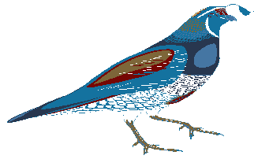
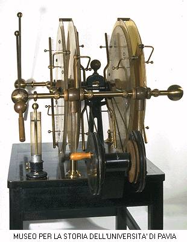
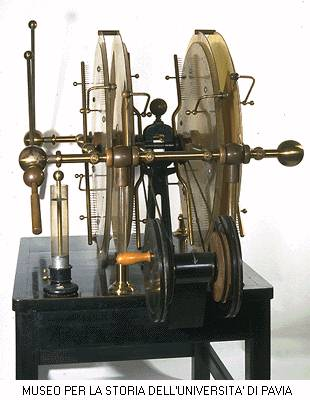

Signs for technical/specialized vocabulary
David Bar-Tzur
Links updated monthly with the help of LinkAlarm.

 

Quail1; quadruple Voss machine.2
EXPLANATION OF THE GLOSSING SYSTEM
(to understand how I describe the signs in this dictionary).
For content knowledge of how to use the physics terms in context, see Guided tutorial in physics for interpreters.
For negotiating and developing temporary signs, see Preparation and sign negotiation
For vocabulary lists to determine helpful signs for a specific discipline, see Vocabulary lists by topic.
- qadosh
- (1) SEPARATE. (2) SPECIAL.
- Qayamat
- ALLAH JUDGE (2h)#ALL WILL, where the third sign is (2h)[A], POs ><, FOs up, are held at shoulder height and move away while opening to (2h)[L].
- Qatar (قطر)
- [X], PO > NDS, FO up, descends slightly while opening to a [1]. For a film of this sign, click on Qatar - قطر. To see the reference source for the sign(s) for this country or to look up other countries in the same geographical area, see Indigenous signs for countries. To find signs for cities within this country (some have no entries) see Indigenous signs for cities.
- Qodesh Q(e)doshim
- ~ (in the Tabernacle)
- TOP* HOLY PLACE IN TABERNACLE.
- ~ (in the Temple)
- TOP* HOLY PLACE IN TEMPLE.
- quaaludes
- (1) "Q". (2) SEVEN FOURTEEN.
- quad-flatpack
- Q-F-P.
- quad inline package
- Q-I-P.
- quadrants I, II, III, and IV (for 2-D only)
Q-U-A-D-R-A-N-T + FIRST~THEREABOUTS@quadrant I'.
L-CL----------------------->
and similarly for the other quadrants. Later you can drop the FS part. Note: 3-D has eight octants, few instructors try to show this visually!
- quadratic
- ~
- Q-U-A-D.
- ~ equation
- (1) Q-U-A-D E-SENTENCE. (2)
Q-U-A-D EQUAL~SENTENCE.
- ~ function
- Q-U-A-D FUNCTION.
- quadrature amplitude modulation
- Q-A-M.
- quadriplegic
- (1) NECK-DOWN FREEZE, where the first sign is (2h)[B], POs down, are held at neck with DH below NDH and DH moves down to show "from the neck down".
- quad surface mount
- Q-S-M.
- quail
- FT of [V:] tap neck twice. For a QuickTime movie of this sign, see ASL browser - quail.
- Quaker (Friends, Society of Friends)
- (1) Fingers of hand are interlaced and the thumbs are "twiddled" or made to circle one another. For a QuickTime movie of this sign, see ASL browser - Quaker. (2) FRIEND. (3) S-CLASS FRIEND.
- qualitative
- Q-U-A-L.
- quality
- ~ (best possible)
- (1) Q-U-A-L-I-T-Y. (2) "Q". (3) SKILL.
- ~ (characteristic)
- (2) [Q] circles around NDS of upper chest and lands on it.
- quality assurance
- Q-A.
- quality control
- Q-C.
- quantitative
- Q-U-A-N.
- quantity
- (1) NDH [B], PO up, FO away. DH [B], PO down, arcs in mound over NDH. (2) HOW-MUCH. (3) HOW-MANY.
- quantum
- (2h)[B], NDPO up, FO away, DH touches thumbside to wrist of NDH, then shows a heap of an imaginary substance on the NDH palm by moving up and then touching small finger side to NDH FT.
- quantum leap
- (2h)[bC], POs ><, FOs up, show circular orbit, then with NDH still in place, DH [V:] jumps from NDH index finger straight up into the air.
- quantum mechanics
- Q-M.
- quantum number
- orbital ~
- "L".
- principal ~
- "N".
- quark
- Q-U-A-R-K.
- quarter
- ~ (basketball)
- first ~
- DH [1] taps FT multiple times against index finger of NDH, [4], PO > DS, FO up.
- second ~
- DH [1] taps FT multiple times against middle finger of NDH, [4], PO > DS, FO up.
- third ~
- DH [1] taps FT multiple times against ring finger of NDH, [4], PO > DS, FO up.
- fourth ~
- DH [1] taps FT multiple times against little finger of NDH, [4], PO > DS, FO up.
- ~ (of a year)
- [Q], PO down, circles and then lands on palm of [B], PO away, FO up.
quarter
- quarter inch cartridge
- Q-I-C.
- quarter profile
- ONE-QUARTER + [1], PO > signer, FO up, pronates PO to face away from signer.
- quasars
- (1) Q-U-A-S-A-R-S. (2) Q-S-O. (< quasi-stellar objects.)
- queen
- QUEEN.
- Queen Esther
- (1) Q>E-QUEEN. (2) E-QUEEN.
- queer (homosexual)
- [G], FO > ND side, touches or taps chin.
- quell
- (2h)[1], POs ><, FOs up, are held with DH against lips and NDH directly in front of it; the hands separate while descending, change to (2h)[5], POs down, FOs away, rise again slightly and descend. For a QuickTime movie of this sign, see ASL browser - quell.
- quench
- (1) THIRSTY DRINK. For a QuickTime movie of this sign, see ASL browser - quench. (2) DRINK, SATISFIED.
- query (computers)
- ASK-QUESTION.
- questionnaire
- PAPER (2h)alt.ASK.
- queue
- (2h)[4],POs ><, DH is held further from signer and moves away to show a line of people or other objects. For a QuickTime movie of this sign, see ASL browser - queue.
- queuing
- QUEUE"each".
- quicksand
- [V] representing legs quickly sinks alongside surface represented by [B], PO down. For a QuickTime movie of this sign, see ASL browser - quicksand.
- quill
- WRITE + with both hands still in position from previous sign, DH ascends while opening from [bO] to [bC] and back again to [bO] to trace the outline of a quill. For a QuickTime movie of this sign, see ASL browser - quill.
- quiz
- Q-U-I-Z, not TEST.
- quorum (LDS [Mormon])
- Q-GROUP.
- quotient
- ~ (ratio)
- NDH [B], PO down, FO > DS, DH [1], points to numerator position above the NDH, then the denominator position below the NDH.
- ~ (the result of long division)
- Left hand [L], PO away, FO > DS, is held out like the symbol for long division, then the right hand [1] points to the position of the quotient above the index finger of the "L". This is true despite handedness because of the shape of the long division symbol.
- Quran (القرآن الكريم)
- BOOK ALLAH. For a film of this Saudi sign, click on القرآن الكريم.
Image credits
1. From http://gallus.tamu.edu/ratite/biosecur.html (Biosecurity for exotic fowl). This site has moved and is now in pdf files.
2. Quadruple Voss machine.

Home
{kind=link}